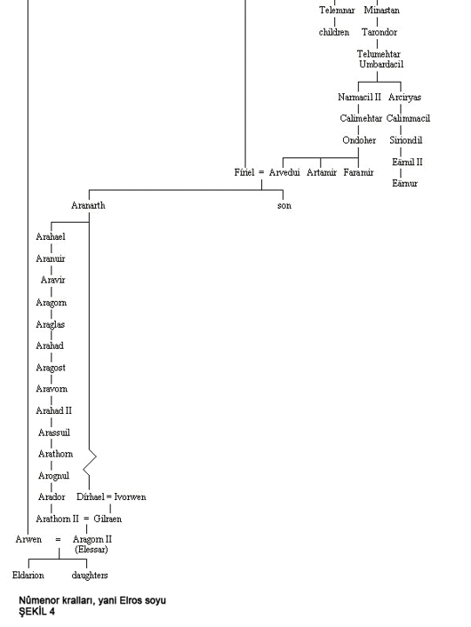

Notlar:
◊ 15. ve son Arthedain Kralı olan Arvedui'nin krallığı Büyücükralın egemenliği altına girerek yok olacaktı; oğlu Aranarth, ilk 'Kuzey Dunedain'inin Reisi' oldu ve soyları bu unvanla kesintiye uğramadan devam etti. 14. Reis Arador'un katledilmesinin ardından ünvan II. Arathorn'a geçecekti. II. Arathorn, Aranarth'ın soyundan gelen Dirhael ve Ivorwen'in kızı Gilraen ile evlendi. Elrond'un oğulları Elladan ve Elrohir ile birlikte orklarla savaşınken öldürülen II. Arathorn'un sadece tek çocuğu vardı. II. Aragorn, 16. Dúnedain Reis'i olurken, annesi tarafından Isildur'un Varisi olarak Yarmavadi'ye Efendi Elrond'un yanına getirildi. Elrond tarafından evlatlık alınan çocuk, yirmi yaşma dek atalarının kim olduğunu bilmeden Estel adıyla yaşadı. Ardından geçmişini öğrendi ve Orta Dünya'da uzun yıllar boyunca dolaşarak, halkların âdetlerini öğrenirken Sauron'a karşı savaşmayı sürdürdü. Gandalf in yakın dostu oldu. Yüzük Savaşları'nın ardından Telcontar Elessar adıyla Yeniden Birleşmiş Krallık'ın (Arnor ve Gondor) Kralı ve Batı Diyarlarının Efendisi oldu. Elrond'un kızı Arwen ile evlendi. Eldarion adlı bir oğulları ve kızları oldu.
